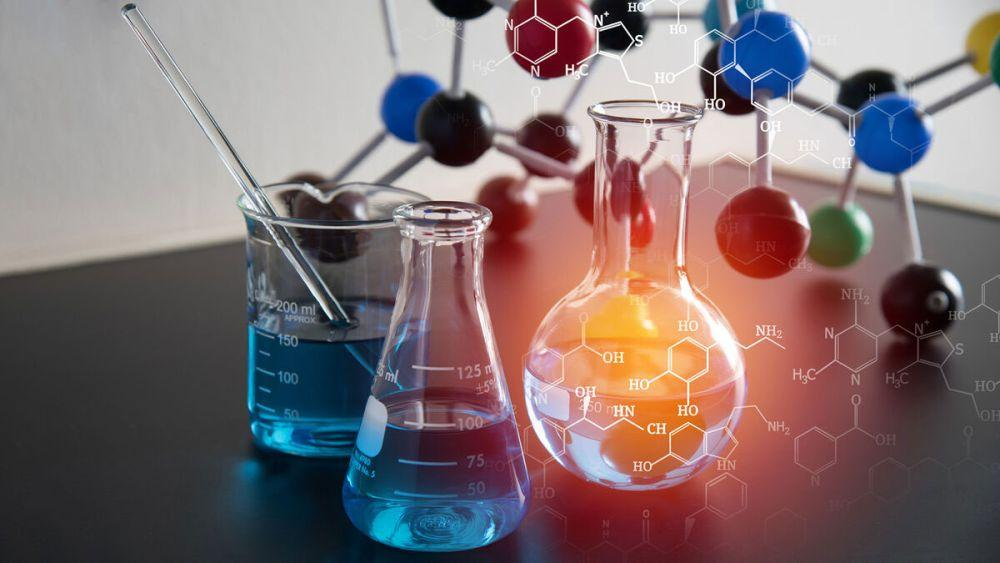

ความหมายและความสำคัญของเคมีอินทรีย์
เคมีอินทรีย์ (Organic Chemistry) เป็นสาขาหนึ่งของวิชาเคมีที่ศึกษาเกี่ยวกับสารประกอบของธาตุคาร์บอน โดยส่วนใหญ่จะมีธาตุไฮโดรเจนร่วมอยู่ด้วย และอาจมีธาตุอื่นเป็นองค์ประกอบ เช่น ออกซิเจน ไนโตรเจน กำมะถัน และฮาโลเจน สารประกอบอินทรีย์มีจำนวนมากและมีโครงสร้างแตกต่างกันอย่างหลากหลาย เนื่องจากธาตุคาร์บอนสามารถสร้างพันธะกับอะตอมอื่น รวมถึงเชื่อมต่อกับคาร์บอนด้วยกันเองได้
สารอินทรีย์พบได้ทั้งในสิ่งมีชีวิตและสิ่งไม่มีชีวิต เช่น น้ำตาล ไขมัน โปรตีน น้ำมันเชื้อเพลิง และพลาสติก ในสิ่งมีชีวิต สารประกอบอินทรีย์มีบทบาทสำคัญต่อการเจริญเติบโต การสร้างพลังงาน และการทำงานของเซลล์ ส่วนในอุตสาหกรรม สารอินทรีย์ถูกนำมาใช้ในการผลิตยา เครื่องสำอาง สี พลาสติก เส้นใยสังเคราะห์ และเชื้อเพลิง
การศึกษาเคมีอินทรีย์ช่วยให้มนุษย์เข้าใจโครงสร้าง สมบัติ และการเปลี่ยนแปลงของสารต่าง ๆ ทำให้สามารถพัฒนาผลิตภัณฑ์ที่มีประโยชน์ต่อชีวิตประจำวันและการแพทย์ รวมถึงช่วยให้เข้าใจผลกระทบของสารเคมีต่อสิ่งแวดล้อมได้ดียิ่งขึ้น